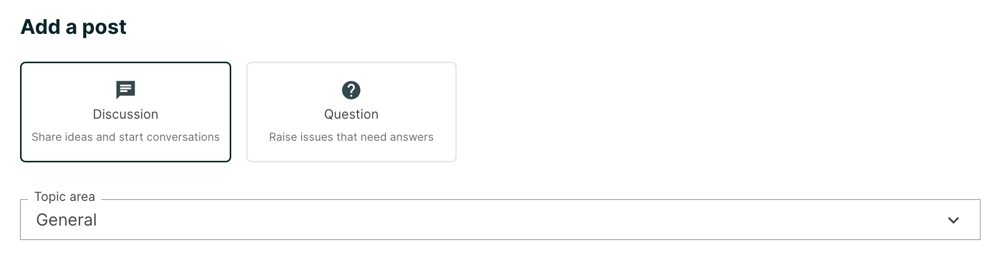
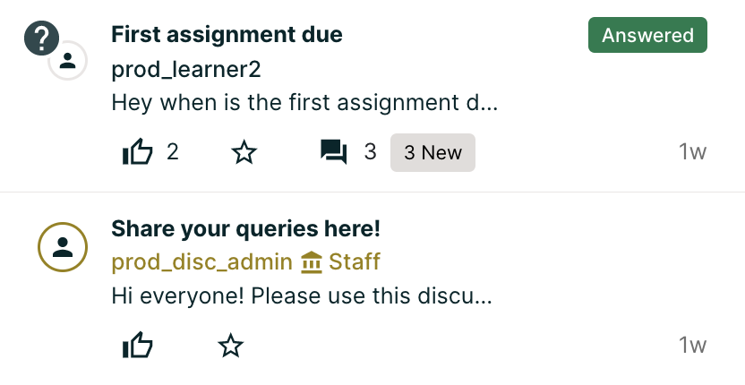
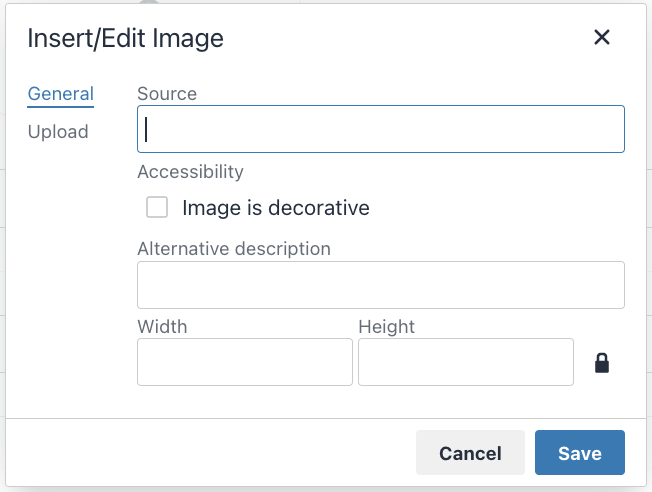
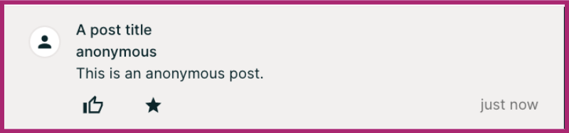

11.3. Taking Part in Course Discussions#
This topic describes how to add, edit, and delete contributions to discussions.
Note
You might want to enter mathematical or scientific expressions in a discussion. For information about how to enter plain text so that it will appear as a formatted mathematical expression, see Math Formatting in Course Discussions.
11.3.1. Adding a Post#
When you add a post to a discussion in your course, you decide what type of post to make and the topic of the post. For course-wide discussion topics, you can add a post on the Discussion page. For content-specific discussions in a course unit, you can add a post either on the Discussion page or directly in the course unit.
11.3.2. Determining the Post Type: Discussion or Question#
To make sure that other learners and the course team can find and respond to your post, decide what type of post you want to make: either question or discussion.
A question post raises an issue so that the discussion moderation team or community can provide answers.
A discussion post starts a conversation by sharing thoughts and reflections, and inviting community participation.
If you have any difficulty deciding which type of post you want to add, think about whether you want to get concrete information (a question) or start an open-ended conversation (a discussion). If you are asking a question about the course and need an answer from the course team, be sure to create your post as a question, so that the course team sees that a response is required and responds appropriately.
{kind=link}
After you make your post, on the Discussion page for your course, a question mark next to the avatar identifies posts that ask questions.
{kind=link}
Note
You can change the post type from discussion to question or vice versa at any time after you add your post. For more information, see Edit or Delete a Post, Response, or Comment.
11.3.3. Determining the Post Topic#
Every post in the course discussions has an associated topic. The course team creates the list of discussion topics for each course, and you choose a topic from that list when you create your post. Before you add a post, you should look through the list of topics in the course discussions so that you can decide which topic is the most appropriate for your post. For more information, see Exploring Discussion Posts.
After you decide on a post type and topic, you can add your post on the Discussion page or in the body of the course.
11.3.4. Add a Post on the Discussion Page#
You can add a post for course-wide or content-specific discussion topics on the Discussion page.
On the Discussion page, select Add a Post.
Determine the type of post you want to make, and select Question or Discussion.
Determine the most appropriate topic for adding your post to, and select the topic from the Topic Area list.
In the Title box, enter a short, descriptive title. The title is the part of your post that others see when they are browsing on the Discussion page or scrolling through one of the content-specific topics.
Enter the text of your post. To format the text or to add links or images, use the formatting options above the text box.
Any text formatting or images that you add are only visible when others read your post in a web browser. The edX mobile app currently does not display added formatting or images.
Click the Show preview button to see how the post will look after submission.
Click the Submit if you are satisfied with the appearance or click Cancel, if you want to discard the post.
{kind=link}
11.3.4.1. Add Image to a Post on the Discussion Page#
You can add an image while creating a post, click the Insert image button visible on top of the text editor to open a dialog box. Use this dialog box to upload and resize the image and add description and source of the image.
{kind=link}
Note
If you include an image with your post, include a description so that learners who use screen readers to access the course can understand the image’s content and purpose. The description also displays in place of the image if problems occur with the image file. If the image has no functional purpose, leave the Alternative description field empty and check the image is decorative.
The maximum size for an uploaded file is 1 MB.
11.3.5. Add a Post in a Course Unit#
If you come to a discussion as you work through the units in your course, or if you know where in the course a particular discussion originates, you can add a post for that discussion from the unit in your course.
The following steps apply only to content-specific discussions.
Select Course.
Open the unit in the course that includes the discussion topic that you want to add a post to.
Select Show Discussion to read what others have already contributed to the conversation.
The title and the first line of each post is shown in the list of posts.
To read an entire post and view its responses and comments, select any part of the post preview.
To contribute a new post to the discussion, select Add a Post and follow the steps that you use to add a post to the discussion page. For more information, see Add a Post on the Discussion Page.
To respond to an existing post or comment on an existing response, follow the steps described in Add Response.
11.3.5.1. Add Image to a Post in a Course Unit#
You can add an image while creating a post, click the Insert image button visible on top of the text editor to open a dialog box. Use this dialog box to upload and resize the image and add description and source of the image.
Note
If you include an image with your post, include a description so that learners who use screen readers to access the course can understand the image’s content and purpose. The description also displays in place of the image if problems occur with the image file. If the image has no functional purpose, leave the Image Description field empty and select This image is for decorative purposes only and does not require a description.
The maximum size for an uploaded file is 1 MB.
11.3.6. Posting Anonymously#
If the course staff has enabled the option to allow anonymous posts, a Post anonymously to peers checkbox will be available under the field where you enter your text, when creating a post. When you post anonymously, the course team and discussion moderation team including community TAs can see your username, but other learners cannot.
{kind=link}
11.3.7. Add a Response or Comment on the Discussion Page#
You can add a response or comment to course-wide or content-specific discussion topics on the Discussion page.
On the Discussion page, find the post that you want to contribute to. To help you decide where to add your thoughts, review the current responses and their comments.
For more information about finding posts by searching, sorting, or using filters, see Exploring Discussion Posts.
Add a response or comment.
To add a response to the post, select Add A Response. When you have finished entering your response, select Submit.
To add a comment to a response, move your cursor inside the Add a comment field below the response. When you have finished entering your comment, select Submit.
11.3.8. Add a Response or Comment in a Course Unit#
You can add a response or comment to a content-specific discussion topic inside the course.
In the unit that contains the discussion topic where you want to make your contribution, select Show Discussion.
Select the post that you want to contribute to. To help you decide where to add your thoughts, review the current responses and their comments.
Add a response or comment.
To add a response to the post, select Add A Response. When your response is complete, select Submit.
To add a comment to a response, select inside the Add a comment field below the response. When your comment is complete, select Submit.
11.3.9. Edit or Delete a Post, Response, or Comment#
You can only edit or delete your own posts, responses, or comments. You cannot edit or delete contributions from other learners.
Locate the contribution that you want to edit or delete, either in the body of the course or on the Discussion page.
In the top-right corner of the contribution, open the actions menu by clicking on the three dots (…)
{kind=link}
Edit or delete the contribution.
To edit the contribution, select Edit, make the changes that you want in the text editor that opens, and then select Submit. For posts, you can change the post topic and the post type as well as the text of the post.
To delete the contribution, select Delete, and then select Delete in the confirmation box.